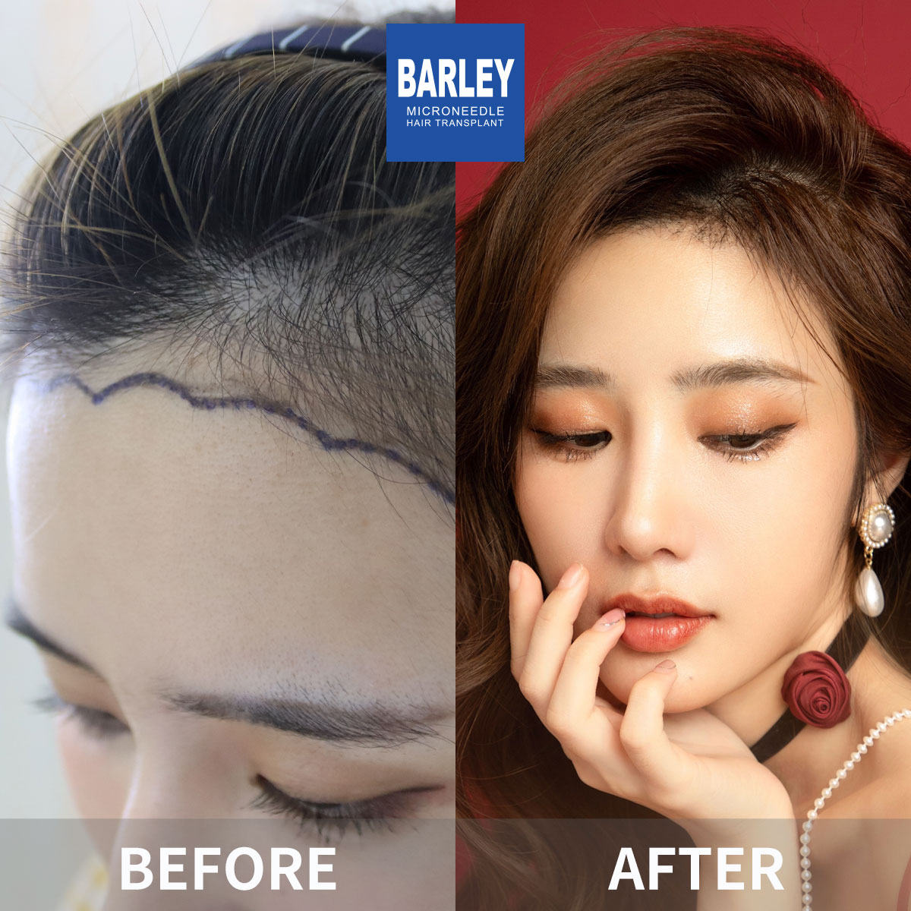
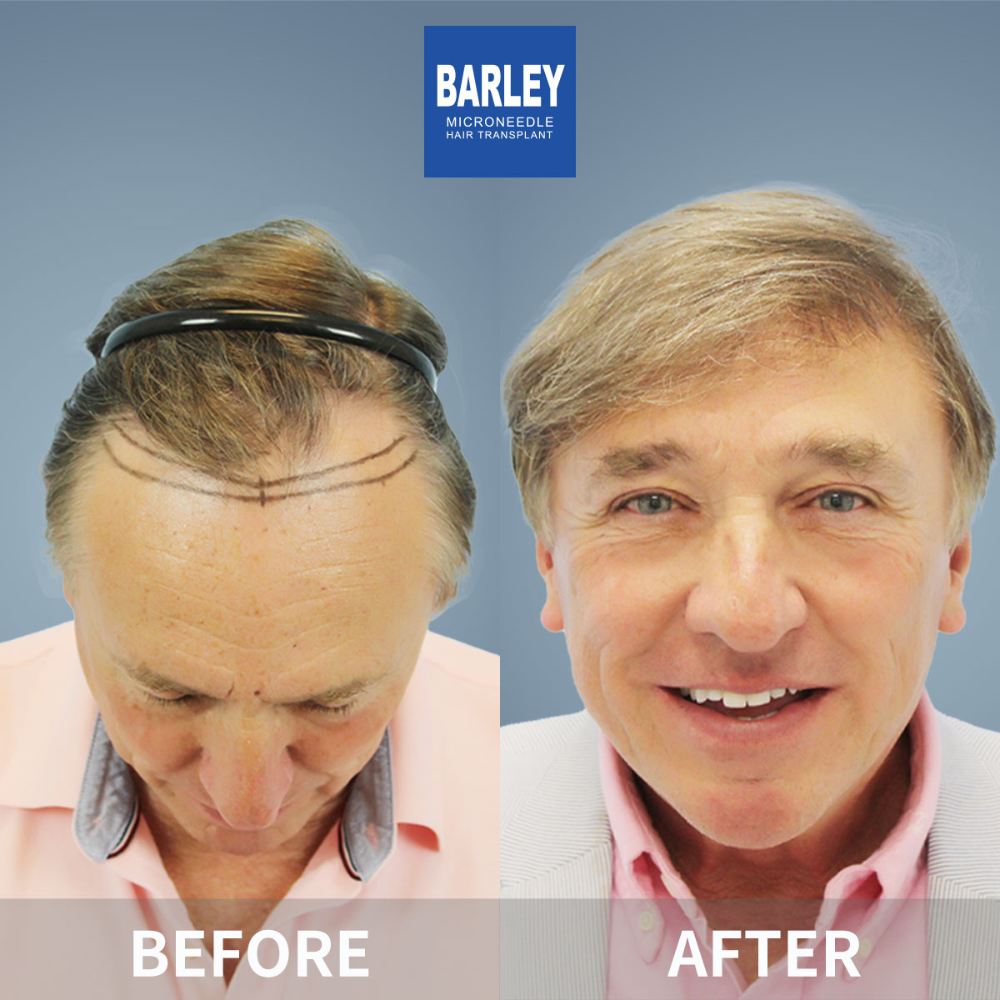
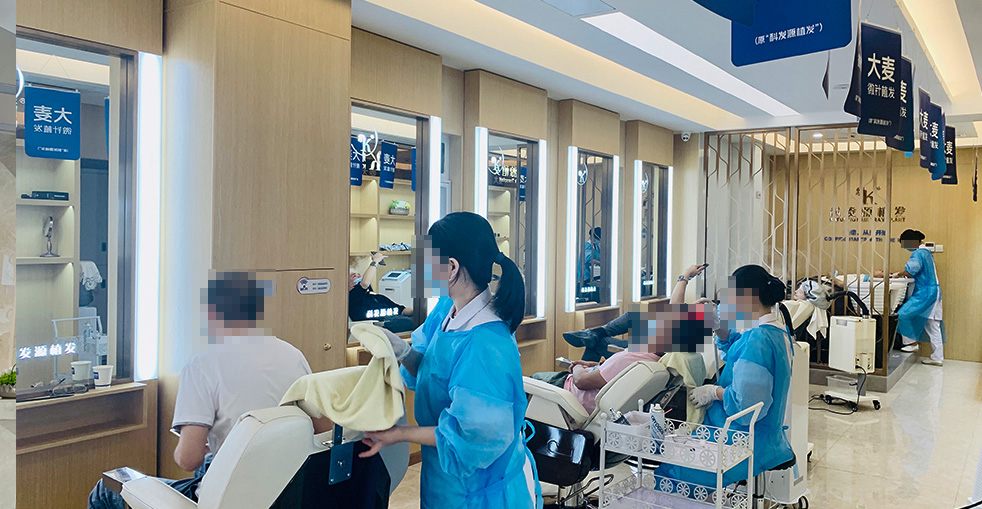

Personalized hairline design with advanced microneedle technology for natural, lasting results
Our hairline transplant procedure is the gold standard in hair restoration. With over 18 years of experience and 100,000+ successful procedures, we specialize in creating natural-looking hairlines that complement your facial features and restore your youthful appearance.

Personalized hairline design based on facial proportions and golden ratio
6-step process designed for optimal results and comfort
Expert evaluation and customized hairline design based on your facial features, age, and goals
Gentle FUE extraction of healthy donor follicles from the back/sides of your scalp
Specialized processing and sorting of follicles for optimal placement
Precision incisions following natural hair growth direction and density
Microneedle placement with patented implant pen for perfect results
Comprehensive care instructions and 12-month follow-up program
Why our hairline transplant delivers natural, artistic, and lasting results
Our surgeons are artists first, technicians second. Using the Three-Gaze-Five-Eye method, they create hairlines tailored to your facial features, age, and ethnicity—ensuring results that look completely natural and enhance your overall appearance.
We specialize in creating the subtle, feathered transition zone that makes hair transplants undetectable. Our patented microneedle technology allows us to place single follicles precisely, creating a natural, gradual density change from hairline to crown.
Every follicle is implanted at the exact angle, direction, and depth of your natural hair growth. Our 360° control ensures the transplanted hair grows exactly like your native hair, blending seamlessly for results that no one will suspect.
Industry leader with proven results
Pioneer and leader in microneedle hair transplant technology since 2006
Across major cities in China, all with the same high standards
Innovative microneedle and implant pen technology for superior results
Trusted by patients from around the globe for life-changing results
Full English support for international patients throughout treatment
State-of-the-art facilities and strict safety protocols for your peace of mind
See the amazing transformations our patients have achieved






Moments captured with our satisfied patients

Very happy with result

Couldn't be happier

Feeling amazing

Professional job

Pleased with outcome

Great choice made

Perfect transformation

Feeling wonderful
Hear from our satisfied patients around the world
My receding hairline is completely restored! The natural design looks perfect. China Hair Transplant Hospital did amazing work!
Finally my hairline is back! The natural design is so realistic, no one suspects it's a transplant! I found them on Google and Bing!
The hairline design was exactly what I wanted! The results are perfect and I couldn't be happier!
As a woman, the personalized hairline was crucial! It looks completely natural and frames my face perfectly!
The FUE hairline transplant exceeded expectations! Natural direction, perfect density, amazing results!
My hairline looks like it never receded! The precision and artistry here are incredible!
Experience our modern and comfortable facilities

Our state-of-the-art facility

Relax in our premium lounge

Sterile and advanced

Private and professional

Comfortable post-op space

Welcoming entrance
Find answers to common questions about hair transplantation
Contact us for a free consultation
15810155700
+86 13730143529
hairtransplant@qq.com